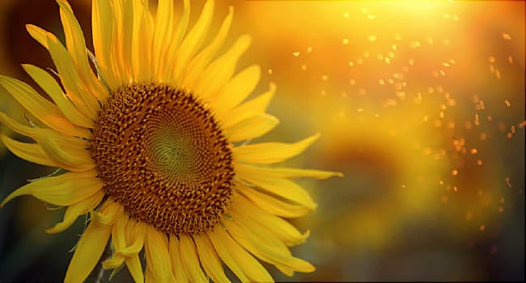
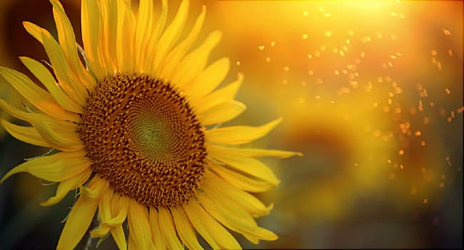

Flowers, a short description
 

Various technical terms are used for describing the form and arrangement of flowers. These are grouped below as follows:
- Terms describing basic flower anatomy
- Terms describing the inflorescence or flowering body
Also, we have some amazing images of flowers!
Terms describing flower anatomy
Classical angiosperm phylogeny is based mainly on flower anatomy, and in particular, the arrangement and form of the principle parts.
The fruiting body is used as well, but its structure is often apparent in the flowers. More recently, genetic studies have been
employed to determine the relationship of various botanical groups to each other. Many parts of the old classification system have
proven more or less consistent with these studies, but there have also been a large number of changes, even to large and well studied groups.
The changes to the classical system have been far more extensive than in the animal kingdom, where the classical, anatomy-based phylogeny has
held up remarkably well. As a result, botanical nomenclature has been undergoing a bit of a revolution in the last two decades, and the process
(as of 2009) is still ongoing. A community known as the Angiosperm Phylogeny Group or APG has provided some centrality to this process, but
there are many areas where no consensus has been reached. Botany has always been prone to what might be termed "vanity species" with some
genera (e.g. hieracium, the hawkweeds) having thousands of specific scientific names. The recent trend has been to recognize certain species
as highly variable; but history dies hard, especially for those who discovered and described the "species".
A flower is the reproductive unit of an angiosperm plant. There is an enormous variety of flowers, but all have some characteristics in common.
The definitive characteristic of the angiosperms is the enclosed ovary, which contains and protects the developing seeds. Floral reproduction
is bisexual, and flowers have "male" and "female" parts. The "male" or pollen-bearing part is called the stamen, and is composed of the filament
and the anther. The "female" or seed-bearing part is called the pistil, and is composed of the
ovary, the stigma, and the style. A flower may
have exclusively male parts, exclusively female parts, or commonly, both. When there are separate flower types, both may occur on the same plant;
occasionally a plant may bear only male or female flowers.
Surrounding the reproductive parts is the perianth, a double envelope consisting of an outer portion, the calyx,
which forms the sepals, and an inner portion, the corolla, which forms the familiar petals.
There may also be leafy elements, termed bracts, surrounding a flower. Individual flowers are often organized into a larger group or cluster,
termed an inflorescence. The stalk supporting a single flower is called a pedicel, that supporting
an inflorescence, or an isolated flower, a peduncle.
- Anther:
- The pollen-bearing body of the stamen, usually relatively compact, and supported at the end of the narrow filament. Under a lens, anthers
exhibit a wide variety of forms and means of attachment. These characteristics are often important in technical keys for flower identification.
- Bract:
- A leaf-like element below a flower or on an inflorescence. Bracts are typically shaped differently than other leaves on the plant.
They are usually green, but occasionally are brightly colored and petal-like.
- Calyx:
- The outer perianth of a flower. The calyx surrounds the corolla, and is typically divided into lobes called sepals. These are frequently
green, and reduced relative to the petals, but they can also be large, and brightly colored, resembling petals. In many flowers, the sepals
enclose and protect the flower bud prior to opening.
- Corolla:
- The inner perianth of a flower. The corolla typically surrounds the reproductive parts of the flower. It may be continuous as in a petunia,
lobed, or divided into distinct petals. In some cases, especially in cultivated varieties, the corolla may be doubled or even further multiplied,
producing multiple layers of petals. In other cases, it may be lacking entirely.
- Filament:
- The usually narrow and often threadlike part of the stamen which supports the pollen-bearing anther.
- Involucre:
- A circle or cup of bracts that surrounds and supports the multiple florets of the head in the composite flowers of the family asteraceae.
The shape and arrangement of the involucral bracts is important in describing the members of this family.
- Ovary:
- The part of the pistil that encloses the unfertilized seeds or ovules, and that typically develops into a dry or fleshy fruit once
pollination takes place. The ovary is generally central to the flower, and supports the other principle parts. Whether they are attached
at the top (ovary inferior) or the bottom (ovary superior) is an important anatomical characteristic for classification. Not all "fruits"
are mature ovaries; some form from supporting parts of the flower, for example, strawberries develop from the receptacle - the enlarged top of the flower stalk.
- Pedicel:
- The footstalk supporting a single flower in an inflorescence.
- Peduncle:
- The stalk supporting an inflorescence or solitary flower.
- Perianth:
- The technical term for the envelope that surrounds the reproductive parts of a flower. This enclosure is composed of two concentric units, the outer
perianth, or calyx which may be divided into sepals, and the inner perianth, or corolla, which may be divided into petals. Either the calyx or the
corolla (or both) may be much reduced or lacking.
- Petal:
- A division or lobe of the corolla or inner perianth of a flower.
- Pistil:
- The seed-bearing or "female" reproductive part of a flower. The pistil is composed of the ovary, the style, and the stigma. The ovary contains the developing
seeds, and is connected to the pollen-receiving stigma by the style. Flowers often contain a single pistil, but may contain several. Staminate or "male" flowers
contain only stamens and lack pistils entirely.
- Receptacle:
- The generally enlarged top of the footstalk, which supports the other parts of the flower. Some "fruits" are enlarged receptacles rather than ovaries.
- Sepal:
- A division or lobe of the calyx or outer perianth of a flower. Sepals are often green, and/or reduced in size, but they can be colorful and petal-like as well.
- Stamen:
- The pollen-bearing or "male" reproductive part of a flower. The pollen is borne on a more or less compact body termed the anther, which is supported by the filament.
A flower may have hundreds of stamens, or only a few. Pistillate or "female" flowers have pistils but no stamens.
- Stigma:
- The upper part of the pistil which receives the pollen. The stigma is often sticky, or covered with fine hairs or grooves, or other anatomical features that help
the pollen to adhere. It may be cleft into several parts.
- Style:
- The usually elongated part of the pistil that connects the ovary to the stigma.
back to top